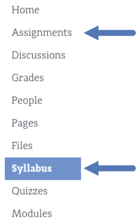
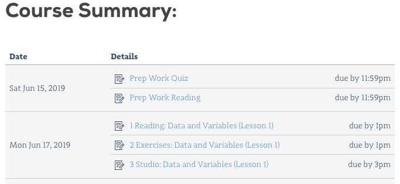
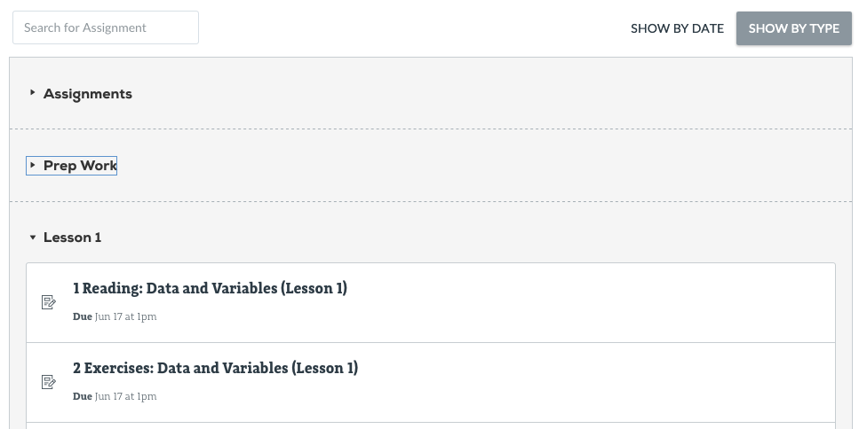
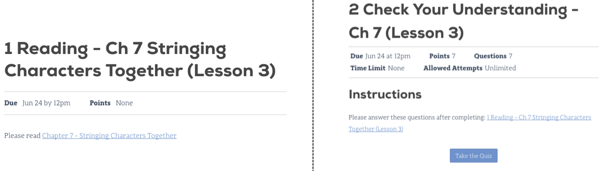

1.5. Class Platforms¶
Besides this book, this class uses additional platforms for enrollment, assignments, and grading.
1.5.1. Canvas¶
LaunchCode monitors your progress in this class through a management system called Canvas. It provides a central location to manage the flow of information, but it does not hold the actual course content. Instead, it links to the lessons you need, and it keeps a record of your completed assignments and scores.
1.5.1.1. Login to Canvas¶
Access Canvas and the course materials at https://learn.launchcode.org/. To login, use your launchcode.org username and password, which are the same ones you used to apply for this class.
1.5.1.2. Canvas Dashboard¶
After logging in, you will arrive at your dashboard. Your Canvas dashboard displays the LaunchCode courses you can access, upcoming due dates, and several menu items.

Clicking on a course title takes you to that class' homepage. This page shows upcoming due dates, announcements, general information, and menu options. You will probably use the Syllabus and Assignments options the most often.

1.5.1.3. Syllabus Page¶
The syllabus page provides general information, such as a description of the class, the timeline for the course, a calendar, and a todo list. Scrolling down on the page shows the Course Summary, which holds links to individual tasks (reading, quizzes, assignments, etc.).
This page is a good place to answer the questions "What do I need to do next?" and "How can I quickly find and review an old topic?".

1.5.1.4. Assignments Page¶
This page sorts required tasks by date or type. We regularly add new tasks to this list so check back here often. Old content remains active, allowing you to use the links for reference and review.

Clicking on a specific title brings up information about that task, including the due date, points possible, instructions, and links.

Even though much of the course content can be accessed without logging in, the best choice is to begin your course work from within Canvas. That way your progress gets recorded and your scores will update smoothly as you complete quizzes. Also, submitting files for the larger assignments should only be done through Canvas.
1.5.2. Repl.it¶
Repl.it is a free online code editor, and it provides a practice space to boost your programming skills.
For this class, Repl.it provides opportunities to respond to prompts, questions, "Try It" exercises, and studios embedded within the reading. These tasks are neither tracked nor scored.
1.5.2.1. Repl.it Account Creation¶
Creating a Repl.it account is covered in Chapter 2. You'll need to create an account to use Repl.it.
1.5.2.2. Online Code Editor¶
Repl.it is an online code editor for various languages. Coders collaborate by sharing Repl.it URLs.
Repl.it is used for:
- Publicly sharing code examples and starter code
- A place to practice new concepts by writing and running code
Tip
- You never have to click save when using Repl.it. Repl.it automatically
- saves your code on their servers.
1.5.3. GitHub Classroom¶
GitHub Classroom provides online code storage. For this class, it also allows for graded assignment submission and evaluation.
GitHub is a web application that uses version control. We'll learn more about GitHub and what version control is in a future lesson.
Note
Results from work submitted in GitHub classroom, appear in Canvas after being verified.
Remember, Canvas holds student grades and quizzes but NOT the course content. Instead, it provides links to the reading and other assignments.